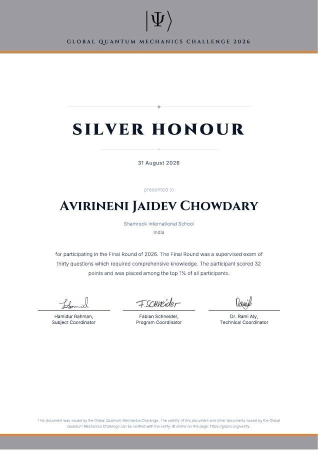

Silver Honour
International finalist recognition with a top-tier signal in a highly competitive research and problem-solving environment.
View certificate ↗STUDENT RESEARCHER · AI DEVELOPER · BUILDER
Student Researcher · AI Developer · Builder
Building intelligent systems and quantitative research for real-world problems.
ADMISSIONS QUICK PATH
PROOF AT A GLANCE
International finalist recognition with a top-tier signal in a highly competitive research and problem-solving environment.
View certificate ↗Young Innovators Program achievement for RuralConnect, a 3-person team project spanning AI, IoT, and smart-village systems.
View evidence ↗National University of Singapore internship focused on AI and data analytics, including hands-on technical problem solving.
View certificate ↗Young Data Scientists competition recognition for applied work in data science and quantitative analysis.
View certificate ↗Recognition in quantum, AI, and semiconductor conversations and research-oriented public engagement.
View certificate ↗Applied ML and RL work across adversarial stress testing and liquidity-aware trade execution research.
Read research ↗WORK
Led a three-person team building a smart-village systems concept with Raspberry Pi, Arduino, sensors, AI/IoT, and real-world utility across agriculture, energy, water, health, and digital skills.
Built a custom AI accessibility system for Indian Sign Language, using MediaPipe and TensorFlow Lite for gesture interpretation with offline capability.
Developed applied ML and quantitative research work spanning adversarial stress testing, financial risk, and execution optimization.
Worked on a telecommunications churn problem using exploratory data analysis, outlier treatment, and model comparison with faculty feedback and structured presentation.
TECHNICAL ARCHIVE
Independent builds in computer vision, tracking, object detection, and interactive systems.
Computer-vision experimentation around tracking, interaction, and responsive gameplay.
Tools, clubs, and teaching initiatives shaped by practical impact and sustained engagement.
RESEARCH
This work builds a three-part framework for scenario generation, adversarial stress amplification, and risk propagation using historical financial indicators to synthesize severe, previously unobserved risk states.
The paper introduces a liquidity-weighted reinforcement-learning execution framework centered on order-book imbalance, market impact, slippage, execution risk, and policy learning for trade optimization.
IMPACT
Built and sustained a quantitative-literacy program for 40+ students, covering percentages, interest, data interpretation, and applied problem solving in a long-term weekly commitment.
40+ students · weekly engagementServed in escalating student leadership roles, bridging communication between students and school staff, including practical coordination work around school systems and lab access.
House Captain → STEM Secretary → Head BoyBuilt a sustained reading movement spanning apartments, clubs, and libraries, creating a visible reading culture and broad reach across school communities.
2+ years · 15 outletsRECOMMENDATIONS
Recommendation available through the internal evidence record associated with the NUS AI Internship experience.
Open evidence ↗Recommendation associated with the HEAL educational and community-impact work.
Open impact record ↗EVIDENCE

International recognition and evidence of competitive problem-solving ability.
View certificate ↗
Project evidence and contest recognition for the RuralConnect smart-village systems concept.
View evidence ↗COMPLETE EVIDENCE ARCHIVE
GITHUB
Sample-only repositories are intentionally excluded from this archive to keep the portfolio focused on active, evidence-backed work.
MEDIA
ABOUT
I work at the intersection of AI, data science, quantitative research, engineering, and accessibility. My projects are built to solve real problems, not only to demonstrate technical flair.
My strongest work sits across computer vision, machine learning, applied research, and community-building programs where learning must be visible, useful, and documented.
ACADEMIC RIGOR
The school did not offer Economics, so I requested the course and the school declined. At the same time, I was balancing the CBSE curriculum with JEE preparation, so AP Microeconomics was taken as a deliberate additional economics rigor course rather than part of a large AP course load. This choice reflected the existing academic commitments already in place.
CONTACT
Public work starts with GitHub and evidence. Private contact details can be added as needed without changing the admissions-first structure.